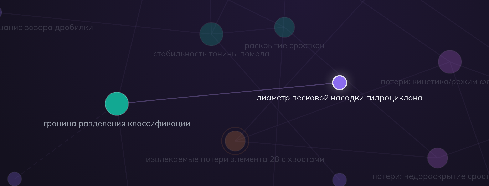

Это не наша оценка рынка — это посчитано из отчёта института по хвостам,
который организаторы дали в кейсе. Цена металла — параметр, металл анонимизирован.
Фабрика гипотез · GoatWhistle2
Почему это ещё не решено: аналоги
Категория
Кто
Что умеют
Почему мимо кейса
AI-учёные гипотезы из литературы
Google Co-Scientist (multi-agent на Gemini, 2025), FutureHouse Robin · Kosmos («1 500 статей за прогон»)
Генерация и ранжирование научных гипотез из литературы; биомед-кейсы (drug repurposing)
Не видят производственные данные предприятия; два прогона LLM — два разных ответа; нет привязки к экономике конкретной фабрики
Materials informatics
Citrine (партнёрства с BASF), Uncountable, Polymerize
ML-предсказание свойств материалов по большим датасетам экспериментов
Требуют тысяч структурированных экспериментов; наш вход — 4 отчёта и учебники; не работают с обогащением руд
Real-time управление уставками: воздух, реагенты, уровни
Оптимизируют существующий процесс — не генерируют R&D-гипотезы об изменении технологии; не читают литературу; нет цепочки до источника
Мы — на пустом пересечении: производственные отчёты × научная литература ×
детерминированная объяснимость × экономика.
Ключ: кейс IntelliSense — лучшая валидация задачи: даже 1% извлечения на одной
фабрике стоит миллионы долларов в месяц. Но real-time оптимизаторы крутят ручки существующей схемы.
Вопрос «что ИЗМЕНИТЬ в технологии» сегодня решается только мозговым штурмом. Мы автоматизируем именно его.
Фабрика гипотез · GoatWhistle3
Наш подход — не «чат с LLM»
1Диагноз потерь ставит детерминированный код — ноль LLM
2Гипотезы находит граф знаний — LLM только читает литературу
3Тот же вход → байт-в-байт тот же результат (snapshot hash)
Большинство решений на этом хакатоне — промпт поверх RAG. Ответ такой системы
нельзя воспроизвести и нельзя защитить перед главным инженером фабрики.
У нас LLM не принимает ни одного решения.
Гипотезычто изменить + $ эффект + trace до ячейки/страницы + план эксперимента
Домен целиком живёт в одном YAML (pack) — движок не знает слова «флотация».
Фабрика гипотез · GoatWhistle5
Демо: диагноз за секунды
Потеряно за год (металл-28)
10 392 т
в отвальных хвостах КГМК
Технологически извлекаемо
7 564 т
по минералогии из инструкции кейса
Потенциал при $16 500/т
≈ $124,8 млн
цена — параметр, не прогноз
+125 ⚠
+71
−71+45
−45+20
−20+10
−10
Раскрытый Pnt/Cp ✓
#REF!
13,4
45,3
140,3
161,2
2 409,9
Закрытый Pnt/Cp (сростки) ✓
#REF!
2 088,3
916,7
1 392,7
382,2
14,1
Миллерит ✓
#REF!
0
0
0
0
0
Примесь в пирротине
#REF!
28,7
15,1
68,6
81,1
83,0
Силикатная форма / Валлериит
#REF!
550,6
480,9
786,7
256,8
476,7
Пирит / другие сульфиды
#REF!
0
0
0
0,02
0,08
0 т2 410 т неизвлекаемо текущей технологией✓ извлекаемая форма
46% всех потерь металла-28 — недораскрытые сростки: 4 794 т, диагноз
liberation_deficit (это 63% извлекаемых потерь; две трети этих тонн — крупные классы
+71 и −71+45). Система поставила диагноз за секунды, детерминированно.
recommendedранг #1 · score 0.867① настройка, без capexDOE: 6 прогонов
Механизмграница разделения ↓→крупные сростки на доизмельчение→раскрытие Pnt/Cp
trace: Итог!E44 (2 088 т сростков в классе +71) → claim_001 → учебник, стр. 212
Экономикаадресует 4 794 т → при +5–15% раскрытия = $4,0–11,9 млн/год; допущения раскрыты: цена $16 500/т — параметр, диапазон — из литературыЭкспериментфакторы: диаметр насадки, давление на входе ГЦ · измеряем: гранулометрию слива, долю закрытого Pnt/Cp, содержание металла-28 в хвостахЧестнориск: рост циркулирующей нагрузки на мельницы · пробел: нет claim о влиянии на металл-29

Живой скрин вкладки Graph (КГМК, 24 узла / 26 связей):
рычаг гипотезы подсвечен вместе с механизмом «граница разделения классификации» —
та же цепочка, что в trace слева. В демо кликабельно.
Каждое число прослеживается до первоисточника — trace в UI кликабелен:
ячейка исходного xlsx и страница учебника. Это и есть интерпретируемость из ТЗ —
не «объяснение от нейросети», а цепочка данных.
Полная замена классификаторов на ГЦ✓Скорость вращения классификатора совпадение
Грохота тонкого грохочения✓Тонкое грохочение после 2-й стадии совпадение
—+6 новых: зазор дробилки, мелющие шары, контактные чаны, плотность пульпы, фронт флотации, депрессор новые
Фабрика
У экспертов
Воспроизведено
Новых
КГМК
5
5
6
НОФ-вкр
6
5
6
НОФ-мед
8
7
4
ТОФ
8
4
7
Всего
27
21 (78%)
23
Live-прогон по всем 4 фабрикам: POST /run + GET /benchmark
(вкладка 04 Benchmark в UI). Эталон — 27 гипотез экспертов из данных кейса.
В данных кейса лежали гипотезы реальных мозговых штурмов по четырём фабрикам.
Мы использовали их не как подсказку, а как ground truth — система их не видела.
Это измеримое качество, а не «поверьте нам».
Фабрика гипотез · GoatWhistle8
Экономика портфеля
#
Гипотеза
Эффект, $ млн/год
0 — 20
Затраты
1
Насадки гидроциклонов 12″ → 8″
4,0 – 11,9
① настройка
2
Геометрия футеровки мельниц
2,4 – 7,9
② замена узла
3
Грохота тонкого грохочения
6,3 – 15,8
③ новое оборудование
4
Фронт первой контрольной флотации
0,3 – 0,7
① настройка
5
Магнитная сепарация + отдельный цикл
7,9 – 19,8
③ новое оборудование
6
Снизить переизмельчение (стабилизация помола)
1,2 – 3,2
① настройка
Ранжирование — по скорингу (деньги на единицу риска), не по максимуму эффекта.
Данные: fixtures/board.json; после реального прогона — из него.
Портфель ранжирован по деньгам на единицу риска. Гипотеза №1 — настройка
за копейки, №3 и №5 — capex-проекты: система различает их и даёт менеджеру выбор,
а не свалку идей.
Фабрика гипотез · GoatWhistle9
Соответствие ТЗ — чек-лист
Требование ТЗ
Как закрыто
Приём разнородных / неполных данных
Якорный парсер xlsx; битые ячейки → панель Data Readiness
Генерация + ранжирование гипотез
Детерминированные операторы + скоринг по 6 осям
Обоснование + привязка к источникам
Trace до ячейки отчёта и страницы PDF
Экспорт
CSV / JSON одним кликом + REST API
Открытые источники (пожелание организаторов)
Корпус расширен open access статьями (MDPI; метаданные — Semantic Scholar API из рекомендаций кейса)
Локальное развёртывание
Rust + Python + web; без внешних зависимостей в рантайме
Мультиязычность
Корпус ru + en обрабатывается одинаково; UI RU/EN
Новые предметные области
Домен = один YAML-pack; движок не меняется
Постановка ТЗ шире данных кейса: цель — параметр (KpiContract),
домен — сменный YAML-pack. Мы показали движок на той области, для которой
организаторы дали данные и эталон качества.
Фабрика гипотез · GoatWhistle10
Итог
$124 млн/год
потенциала — одна фабрика, один отчёт
Система нашла за 3 минуты то, что эксперты искали неделю, —
и посчитала это в деньгах, с доказательствами до ячейки исходника.